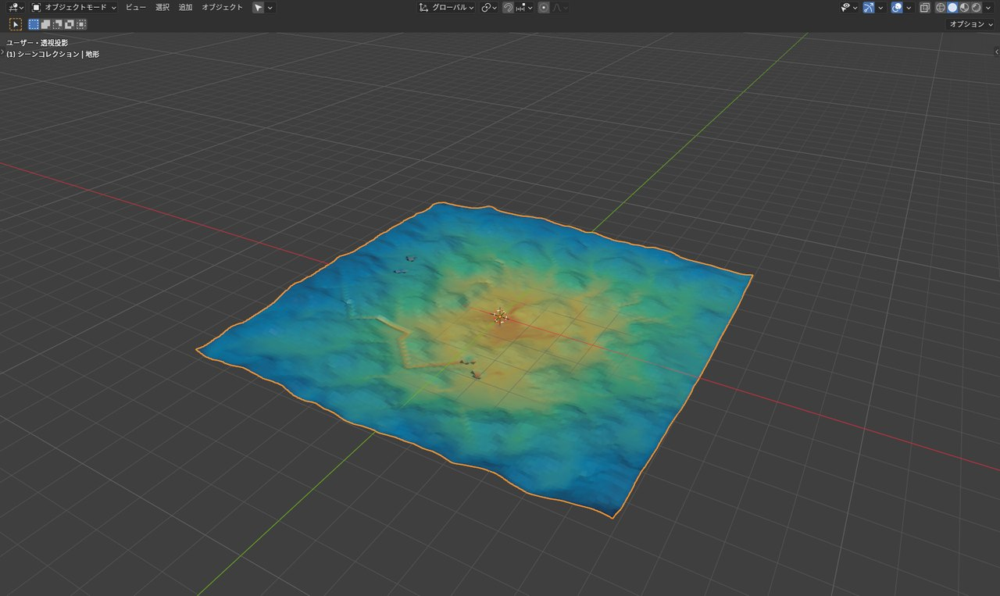
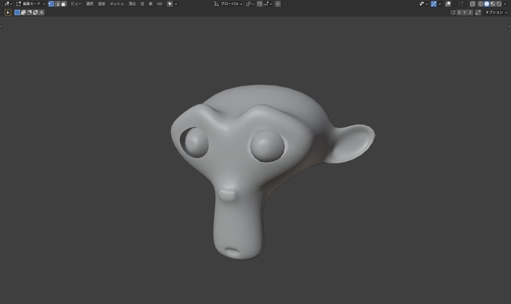
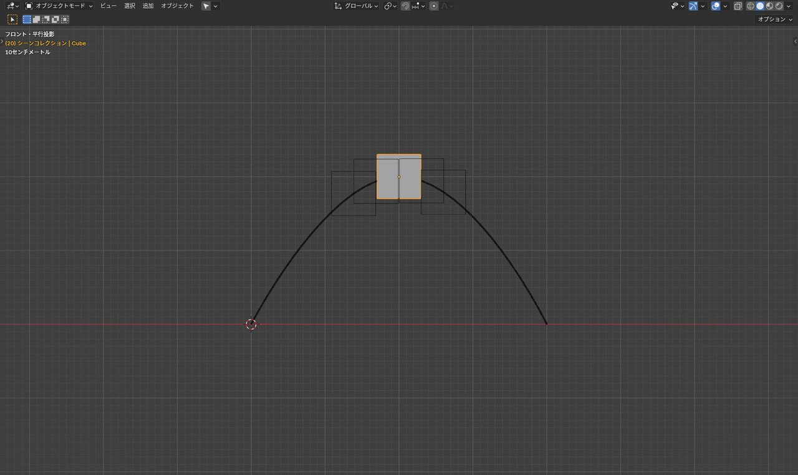
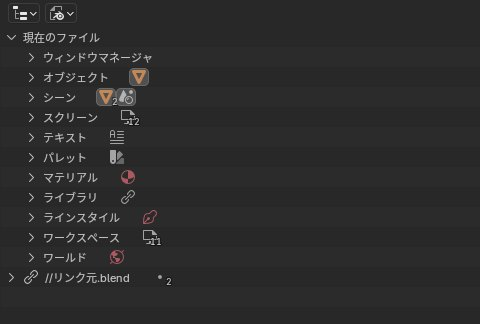

SmartTools
SmartTools 全体仕様書
版 1.0.0 ／ 2026年11月18日 ／ Blender 5.1.2 用
SmartTools の 23 個のアドオンすべてに共通することを、この 1 冊にまとめました。アドオンの入れ方・画面を日本語にする方法・N パネルと「？」ヘルプの使い方・困った時の対処を先に読み、そのあと使うアドオンの解説書へ進んでください。
1. この資料について
- SmartTools は、Blender 5.1.2 で使う 21 種のアドオンと、それらをまとめて管理する「Smart Tools Manager」、付属ツールの「キーマップマネージャー」の、合わせて 23 個です。
- Smart Tools Manager は、SmartTools 全体を管理するためのツールです。各アドオンのパネルをどの画面に出すかを、一つの画面でまとめて決めます。入れなくても、ほかのアドオンはそのまま使えます（6 章）。
- キーマップマネージャーは、SmartTools に付属するツールです。Blender のショートカットキーを調べ、重なりを見つけて直す道具です。
- 同じアドオンを二重に入れないでください（3 章）。
- アドオンごとの使い方は、それぞれの解説書（10 章）にあります。どの解説書も同じ章立てです。
2. アドオンの一覧
次の 23 個の ZIP を、ダウンロード一覧から入手できます。使う物だけ入れて構いません。
全体の管理
SmartTools 全体を管理するためのツールです。ほかのアドオンのパネルをどの画面に出すかを、一つの画面でまとめて決めます（6 章）。
| 名前 | 何をするか | ZIP | 大きさ | 解説書 |
|---|---|---|---|---|
| Smart Tools Manager | SmartTools 全体を管理するためのツールです。ワークスペースとエディターの組み合わせごとに、どのスマートツールのパネルを出すかを、一つの画面でまとめて決めます。 | SmartToolsManager_1.0.0_7E167F69A38A_INSTALLABLE.zip | 83 KB | 解説書 |
モデリング
| 名前 | 何をするか | ZIP | 大きさ | 解説書 |
|---|---|---|---|---|
| Smart Geometry | 地形・散布の点・がれき（デブリ）・破片・枝分かれした曲線・あとから数値で直せる基本形状などを、ボタンで作る形状生成ツールです。 | SmartGeometry_1.0.0_E387793A4FCB_INSTALLABLE.zip | 675 KB | 解説書 |
| Smart Modeling | 頂点の編集・整列・削除・リトポ・ハードサーフェス・生成など、モデリングの補助ツールを 1 つのサイドバーにまとめたアドオンです。 | SmartModeling_1.0.0_64D0C41414B1_INSTALLABLE.zip | 3,051 KB | 解説書 |
| Smart Modifier | 3Dビューのサイドバーで、モディファイアの追加・並べ替え・表示切り替え・途中段階の編集をまとめて行う道具です。 | SmartModifier_1.0.0_2DBF95E1FD83_INSTALLABLE.zip | 1,581 KB | 解説書 |
| Smart Sculpt | スカルプト（粘土をこねるように形を作る作業）に使う道具を、サイドバーの「Smart Sculpt」タブ 1 か所にまとめたアドオンです。 | SmartSculpt_1.0.0_7FA484C3B8E5_INSTALLABLE.zip | 10,772 KB | 解説書 |
| Smart Transform | 物の位置・回転・大きさを数字でぴったり決めたり、クリックやドラッグで動かす操作を使いやすくしたりする道具をまとめたアドオンです。 | SmartTransform_1.0.0_7E999B13649F_INSTALLABLE.zip | 644 KB | 解説書 |
UV・材質・ペイント
| 名前 | 何をするか | ZIP | 大きさ | 解説書 |
|---|---|---|---|---|
| Smart Node | ノードの結合・配線・ラベル付け・整列・選択・片づけを、ノードエディターのサイドバーのボタンでまとめて行うノード作業ツールです。 | SmartNode_1.0.0_DEDFEECD3A3C_INSTALLABLE.zip | 398 KB | 解説書 |
| Smart Paint | PSD などのレイヤー付き画像を、Blender の中でレイヤーごとに描いて保存できるペイント用アドオンです。 | SmartPaint_1.0.0_442AEE78C75D_INSTALLABLE.zip | 954 KB | 解説書 |
| Smart Shader | マテリアル（物の見た目の設定）の作成、トゥーン化、テクスチャの取り込み、整理、点検を、サイドバーの 1 つのタブからまとめて行うアドオンです。 | SmartShader_1.0.0_47B6DBE66C5A_INSTALLABLE.zip | 11,425 KB | 解説書 |
| Smart UV | UV展開・整列・パック・テクセル密度・UVマップ管理を、サイドバーの「Smart UV」タブ 1 つにまとめたアドオンです。 | SmartUV_1.0.0_FC4A728537D3_INSTALLABLE.zip | 4,155 KB | 解説書 |
リグ・アニメーション
| 名前 | 何をするか | ZIP | 大きさ | 解説書 |
|---|---|---|---|---|
| Smart Animation | キーフレームの作業を楽にする道具を、サイドバーの 1 つのタブにまとめたアドオンです。 | SmartAnimation_1.0.0_289B00090162_INSTALLABLE.zip | 1,077 KB | 解説書 |
| Smart Cloth | 服のクロス（布のシミュレーション）の準備・軽量化・点検・安全なベイクと、剛体（Quick Rigid）・骨の揺れ（Jiggle Physics）を、サイドバーの 1 つのタブでまとめて扱うアドオンです。 | SmartCloth_1.0.0_08B5B5CD3B3B_INSTALLABLE.zip | 264 KB | 解説書 |
| Smart Rig | Auto-Rig Pro でキャラクターにリグを組む手順を、準備から揺れの焼き込み・動きの検査まで 1 つのパネルに順番に並べた連携アドオンです。 | SmartRig_1.0.0_4C04AE8098FF_INSTALLABLE.zip | 707 KB | 解説書 |
| Smart Selector | 選びたい物を名前付きで覚えておく「選択セット」と、ブラウザーで作るボタン画面「セレクター」で、Blender の選択や操作を素早く行うアドオンです。 | SmartSelector_1.0.0_E0A818A509DA_INSTALLABLE.zip | 495 KB | 解説書 |
| Smart Shapekey | シェイプキー（形の変化）を作る・整理する・動かす道具と、顔の収録を焼き込む道具を、サイドバーの 1 枚のパネルにまとめたアドオンです。 | SmartShapekey_1.0.0_5B1B79A30526_INSTALLABLE.zip | 4,143 KB | 解説書 |
撮影・仕上げ
| 名前 | 何をするか | ZIP | 大きさ | 解説書 |
|---|---|---|---|---|
| Smart CamLight | カメラとライトの管理を、サイドバーの 1 つのパネルにまとめるアドオンです。 | SmartCamLight_1.0.0_23A7897E77E1_INSTALLABLE.zip | 116 KB | 解説書 |
| Smart Composite | ボタン1つで、コンポジター（レンダー後の画像を仕上げるノード画面）にグローやボケなどのノードのまとまりを追加するアドオンです。 | SmartComposite_1.0.0_7909D8AFA6F7_INSTALLABLE.zip | 2,603 KB | 解説書 |
| Smart Render | レンダーの準備・出力先の確認・まとめての書き出しを、1 つのパネルで行うアドオンです。 | SmartRender_1.0.0_6C0000419BF0_INSTALLABLE.zip | 755 KB | 解説書 |
画面・管理
| 名前 | 何をするか | ZIP | 大きさ | 解説書 |
|---|---|---|---|---|
| Smart File | ファイルの取り込み・リンクの点検・書き出し・確認・履歴と復元を、サイドバーの 1 つのパネルにまとめた道具です。 | SmartFile_1.0.0_EE5205A14133_INSTALLABLE.zip | 4,761 KB | 解説書 |
| Smart ID | 制作で使う ID やチャンネル（UV マップ、属性、グループなど）を一覧で管理し、オブジェクトへまとめて付けたり調べたりできるアドオンです。 | SmartID_1.0.0_7283388EEA55_INSTALLABLE.zip | 123 KB | 解説書 |
| Smart Overlay | 3D ビューに、頂点・辺・面の見やすい色付け、裏側の表示、トポロジーの検査、プロポーショナル編集の範囲、寸法などを重ねて表示するアドオンです。 | SmartOverlay_1.0.0_DD148B263335_INSTALLABLE.zip | 630 KB | 解説書 |
| Smart Workspace | Nパネル（サイドバー）のタブ整理・クイックランチャー・画面配置の保存・表示の軽量化を、1つのタブにまとめた作業環境ツールです。 | SmartWorkspace_1.0.0_652B68A6B820_INSTALLABLE.zip | 835 KB | 解説書 |
付属ツール
SmartTools に付属するツールです。
| 名前 | 何をするか | ZIP | 大きさ | 解説書 |
|---|---|---|---|---|
| キーマップマネージャー | SmartTools に付属するツールです。キーボードの形の画面からショートカットを調べ、重なり（競合）を見つけて直せます。 | KeymapManager_1.0.0_2E9248DD7504_INSTALLABLE.zip | 50 KB | 解説書 |
3. アドオンを入れる
アドオンは ZIP のまま入れます。ZIP を展開（解凍）しないでください。ネットにつながっていなくても入れられます。
- Blender を起動し、上のメニューの「編集」→「プリファレンス」を開きます（英語の画面なら Edit → Preferences）。
- 左の一覧から「エクステンションを入手」（Get Extensions）を選びます。
- 右上の ∨（下向きの矢印）のメニューを開き、「ディスクからインストール...」（Install from Disk...）を選びます。
- ファイルを選ぶ画面で、ダウンロード一覧から入手した ZIP を 1 つ選び、「ディスクからインストール」を押します。
- 入れたい ZIP の数だけ 3〜4 を繰り返します。
- 左の一覧の「アドオン」を開き、入れたアドオンにチェックが入っている（有効になっている）ことを確かめます。
4. 画面を日本語にする
アドオンの文字は、Blender の言語を日本語にした時だけ日本語で出ます。英語のままだと、アドオンの文字も英語になります。
- 「編集」→「プリファレンス」を開きます。
- 左の一覧の「インターフェイス」（Interface）を選びます（画像の 1）。
- 「言語」の欄で 「日本語 - Japanese」を選びます（画像の 2）。
- 「翻訳」の「ツールチップ」と「インターフェイス」にチェックを入れます（画像の 3）。「報告」もオンをおすすめします。
- プリファレンスの窓を閉じます。設定は自動で保存されます。


5. N パネルと「？」ヘルプの使い方
多くのアドオンの操作は、エディターの右に出るサイドバー（N パネル）にあります。マウスをエディターの上に置いて N キーを押すと、出したり隠したりできます。右端の縦のタブ（Smart Modeling、Smart UV …）を押すと、そのアドオンのパネルに切り替わります。

- タブの名前は英字（Smart Selector など）で、パネルの見出しは日本語（スマートセレクターなど）のアドオンがあります。同じ物です。
- パネルの中は見出しごとに分かれています。見出しの左の ▶ を押すと開き、▼ を押すと閉じます。
- 見出しの右の ？ を押すと、その機能の説明が日本語で出ます。使い方に迷ったら、まず ？ を押してください。
- ボタンの上にマウスをしばらく置くと、短い説明（ツールチップ）が出ます。説明を持たない項目には出ません。
- アドオンによっては、3D ビューだけでなく、UV エディター・シェーダーエディター・ドープシートなどのサイドバーにもパネルが出ます。どこに出るかは各解説書の 3 章に書いてあります。
- 全体を管理する Smart Tools Manager はトップバーの「スマートツール」ボタンから（6 章）、付属ツールのキーマップマネージャーはプリファレンスの「キーマップ」の中で使います。どちらもサイドバーのパネルはありません（各解説書を見てください）。

6. SmartTools 全体を管理する（Smart Tools Manager）
Smart Tools Manager は、SmartTools 全体を管理するためのツールです。アドオンをたくさん入れると、サイドバー（N パネル）にタブが並びすぎて探しにくくなります。そこで「ワークスペース」（作業ごとの画面の組み合わせ）と「エディター」（3D ビューポートや画像エディターなどの画面の種類）の組ごとに、どのアドオンのパネルを出すかを、一つの画面でまとめて決めます。アドオン本体の有効・無効は変えず、パネルの表示だけを切り替えます。入れなくても、ほかのアドオンはそのまま使えます。
開き方
- 「編集」メニューから「プリファレンス」を開き、「アドオン」で「Smart Tools Manager」の行を開きます（名前の左の矢印を押します）。
- 「常時機能切り替え」を押して欄を開き、「トップバーボタン」にチェックを入れます。
- 画面のいちばん上の帯（トップバー）の左側、ワークスペースのタブの後ろに「スマートツール」ボタンが出ます。次からはこれを押して開きます。
プリファレンスの同じ欄の「スマートツールマネージャーを開く」を押しても、マネージャーの画面が開きます。
できること
- ワークスペースとエディターの組ごとに、21 本のアドオンのパネルを「有効」「無効」で切り替えます。最初はどれも「有効」です。
- 設定を保存し、Blender を起動し直しても同じ設定に戻します。設定ファイルの再読み込みと、バックアップからの復元もできます。
- 問題が起きた時の「実行メッセージ」を表示し、全文をコピーできます。
- 「リリース整理」で、自分で選んだ不要データだけを除いた .blend のコピーを作ります。元のファイルは変えません。
詳しくは Smart Tools Manager の解説書を見てください。
7. 第三者のアドオンについて
ここで配布している ZIP には、第三者（他社）のアドオンは入っていません。SmartTools は単独で動きます。ただし、次の機能は第三者のアドオンを呼び出すので、それが入っている時だけ使えます。
| 名前 | 使う SmartTools | 注意 |
|---|---|---|
| Auto-Rig Pro（有料） | Smart Rig・Smart Selector の IK/FK の切り替えとスナップ | ポーズ付けと再生だけなら要りません。「Match to Rig」「Apply Pose as Rest」は MIK に使わないでください。 |
| Auto-Rig Pro の Rig Tools | 同上のスナップ | 本体と同時に有効にしないでください。 |
| Proxy Picker | Smart Rig の「表示・選択・リグUI」の一部 | 無くてもほかの機能は使えます。 |
| AI_win | Smart Rig の「AIランタイム連携」のマーカー推定 | Windows x64 でだけ動きます。無くてもほかの機能は使えます。 |
| Simply Cloth Studio | Smart Cloth の「スマートセットアップ」「安全仕上げ」など | 「安全ベイク」「ベイク解除」や Blender 標準のクロスの再生には要りません。 |
第三者のアドオンが無い時、そのボタンは押せないか、押すと「見つかりません」と知らせが出ます。Blender が止まることはありません。
8. アドオンを止める・入れ直す
- 「編集」→「プリファレンス」→「アドオン」を開きます。
- 止めたいアドオンのチェックを外すと、そのアドオンは止まります（パネルが消えます）。もう一度チェックを入れると戻ります。
- 消したい時は、アドオンの行の右の ∨ を開き、「アンインストール」を押します。
- 入れ直す時は、消してから Blender を一度閉じて開き直し、3 章の手順で入れます。
9. 困った時
- アドオンの文字が英語のまま
- 4 章のとおり「言語」を日本語にし、「翻訳」の「インターフェイス」と「ツールチップ」にチェックを入れてください。
- N パネルに Smart ○○ のタブが無い
- ①「プリファレンス」→「アドオン」で、そのアドオンにチェックが入っているか、② マウスがそのエディターの上にある状態で N を押したか、③ そのアドオンが出るエディターか（各解説書の 3 章）、を確かめてください。Smart Tools Manager を入れている時は、その置き場所の設定も確かめてください。
- 「ディスクからインストール」で失敗する
- ZIP を展開していないか、別の版が入っていないかを確かめてください。展開した場合は、元の ZIP を選び直してください。別の版が入っている時は、先にアンインストールしてから入れてください。
- パネルが二重に出る
- 同じアドオンの別の版が二つ入っています。古い方をアンインストールして、Blender を開き直してください。
- ボタンを押すと赤い字の知らせが出る
- 画面の下のステータスバーと、Info エディター（エディターの種類で「情報」）に理由が出ます。多くは「選んでいる物が違う」「モードが違う」です。その機能の ？ を押して、準備の欄を確かめてください。
- 間違えて押してしまった
- 多くの操作は Ctrl+Z（元に戻す）で戻せます。重い操作の前には、.blend を別名で保存しておくと安心です。
アドオンごとのことは、各解説書の 6 章「困った時」を見てください。
10. 解説書の索引
どの解説書も、1 できること／2 準備／3 画面の場所／4 機能の説明／5 よく使う手順／6 困った時／7 用語集／8 付録、の同じ章立てです。各解説書の 1 章と 4 章には、スザンヌや MIK のモデルで実際に操作し、3D ビューでの変化を前と後で並べた「実例」があります。下の図は、各アドオンの代表的な実例の「後」の図です。図を押すと、その解説書が開きます。
全体の管理

- Smart Tools Manager（スマートツールマネージャー）：SmartTools 全体を管理するためのツールです。ワークスペースとエディターの組み合わせごとに、どのスマートツールのパネルを出すかを、一つの画面でまとめて決めます。
モデリング





- Smart Geometry（スマートジオメトリー）：地形・散布の点・がれき（デブリ）・破片・枝分かれした曲線・あとから数値で直せる基本形状などを、ボタンで作る形状生成ツールです。
- Smart Modeling（スマートモデリング）：頂点の編集・整列・削除・リトポ・ハードサーフェス・生成など、モデリングの補助ツールを 1 つのサイドバーにまとめたアドオンです。
- Smart Modifier（スマートモディファイア）：3Dビューのサイドバーで、モディファイアの追加・並べ替え・表示切り替え・途中段階の編集をまとめて行う道具です。
- Smart Sculpt（スマートスカルプト）：スカルプト（粘土をこねるように形を作る作業）に使う道具を、サイドバーの「Smart Sculpt」タブ 1 か所にまとめたアドオンです。
- Smart Transform（スマートトランスフォーム）：物の位置・回転・大きさを数字でぴったり決めたり、クリックやドラッグで動かす操作を使いやすくしたりする道具をまとめたアドオンです。
UV・材質・ペイント


- Smart Node（スマートノード）：ノードの結合・配線・ラベル付け・整列・選択・片づけを、ノードエディターのサイドバーのボタンでまとめて行うノード作業ツールです。
- Smart Paint（スマートペイント）：PSD などのレイヤー付き画像を、Blender の中でレイヤーごとに描いて保存できるペイント用アドオンです。
- Smart Shader（スマートシェーダー）：マテリアル（物の見た目の設定）の作成、トゥーン化、テクスチャの取り込み、整理、点検を、サイドバーの 1 つのタブからまとめて行うアドオンです。
- Smart UV（スマートUV）：UV展開・整列・パック・テクセル密度・UVマップ管理を、サイドバーの「Smart UV」タブ 1 つにまとめたアドオンです。
リグ・アニメーション



- Smart Animation（スマートアニメーション）：キーフレームの作業を楽にする道具を、サイドバーの 1 つのタブにまとめたアドオンです。
- Smart Cloth（スマートクロス）：服のクロス（布のシミュレーション）の準備・軽量化・点検・安全なベイクと、剛体（Quick Rigid）・骨の揺れ（Jiggle Physics）を、サイドバーの 1 つのタブでまとめて扱うアドオンです。
- Smart Rig（スマートリグ）：Auto-Rig Pro でキャラクターにリグを組む手順を、準備から揺れの焼き込み・動きの検査まで 1 つのパネルに順番に並べた連携アドオンです。
- Smart Selector（スマートセレクター）：選びたい物を名前付きで覚えておく「選択セット」と、ブラウザーで作るボタン画面「セレクター」で、Blender の選択や操作を素早く行うアドオンです。
- Smart Shapekey（スマートシェイプキー）：シェイプキー（形の変化）を作る・整理する・動かす道具と、顔の収録を焼き込む道具を、サイドバーの 1 枚のパネルにまとめたアドオンです。
撮影・仕上げ


- Smart CamLight（スマート カムライト）：カメラとライトの管理を、サイドバーの 1 つのパネルにまとめるアドオンです。
- Smart Composite（スマートコンポジット）：ボタン1つで、コンポジター（レンダー後の画像を仕上げるノード画面）にグローやボケなどのノードのまとまりを追加するアドオンです。
- Smart Render（スマートレンダー）：レンダーの準備・出力先の確認・まとめての書き出しを、1 つのパネルで行うアドオンです。
画面・管理



- Smart File（スマートファイル）：ファイルの取り込み・リンクの点検・書き出し・確認・履歴と復元を、サイドバーの 1 つのパネルにまとめた道具です。
- Smart ID（スマートアイディー）：制作で使う ID やチャンネル（UV マップ、属性、グループなど）を一覧で管理し、オブジェクトへまとめて付けたり調べたりできるアドオンです。
- Smart Overlay（スマートオーバーレイ）：3D ビューに、頂点・辺・面の見やすい色付け、裏側の表示、トポロジーの検査、プロポーショナル編集の範囲、寸法などを重ねて表示するアドオンです。
- Smart Workspace（スマートワークスペース）：Nパネル（サイドバー）のタブ整理・クイックランチャー・画面配置の保存・表示の軽量化を、1つのタブにまとめた作業環境ツールです。
付属ツール

- キーマップマネージャー（キーマップマネージャー）：SmartTools に付属するツールです。キーボードの形の画面からショートカットを調べ、重なり（競合）を見つけて直せます。
11. 付録：確認値
ZIP が壊れていないかは、SHA256 の値で確かめられます（Windows なら PowerShell で Get-FileHash ファイル名）。
| 名前 | id | 版 | 大きさ（バイト） | SHA256 |
|---|---|---|---|---|
| キーマップマネージャー | keymap_manager | 1.0.0 | 50,322 | 2ed9d7811df9cea17300498f6d7e3d7580998bec2f640d1c897ef1e7c629d7c0 |
| Smart Animation | smart_animation_suite | 1.0.0 | 1,102,810 | d4a8b08c57d2fa87e921fbb3535cffd3dbf4cd1da4b96b733175f238a90dee74 |
| Smart CamLight | smart_camlight_suite | 1.0.0 | 118,137 | 9595da3529f246c79049b84ab6a2d6e690f0370b3462efa653eb607f5685f692 |
| Smart Cloth | smart_cloth_suite | 1.0.0 | 269,560 | 85c0171276bf735b35e26d5e0d513c9622bccb7597836fe7df5fee979cb8ca7a |
| Smart Composite | smart_composite_suite | 1.0.0 | 2,664,835 | 11a5cf608b68530b1e70969b506961f5867e4be94b3d02810b1da25fea9c3fed |
| Smart File | smart_file_suite | 1.0.0 | 4,875,049 | 514f6b6e194a2586ff504959f0fed6970640de52835cf01059fa01b3a8c515d3 |
| Smart Geometry | smart_geometry_suite | 1.0.0 | 690,199 | 516121af86f009da4e76526e58184e56c0557b9fb32ed4e0d8cbe9b7b5d041fa |
| Smart ID | smart_id_suite | 1.0.0 | 125,402 | 01710ab41b9fcba71a9be60a80a597f827758e4c63fe5ccba790460e28a5ba8a |
| Smart Modeling | smart_modeling_suite | 1.0.0 | 3,123,273 | c7b3a8364e613059fdd67bbdc76408ee69962625d2a18665d59738cbea45fa81 |
| Smart Modifier | smart_modifier_suite | 1.0.0 | 1,617,989 | 7c071dd90cf35e58f47e3cb8ece94283e07a667d2b67c0f7029d332fe486c80f |
| Smart Node | smart_node_suite | 1.0.0 | 407,215 | bac97b59ef84def291279b77891a857651aaf116e939e8ff22c19a983366b53b |
| Smart Overlay | smart_overlay_suite | 1.0.0 | 645,050 | 14f52dde08ba7997c0050dedd2f14afe7cfdab6e5bbd1d137ce5aa7677142b94 |
| Smart Paint | smart_paint_suite | 1.0.0 | 976,750 | 527b352bff80c7a4b822c8b7707d120dcc5ca838fd3f5b88e36d2f30927c197d |
| Smart Render | smart_render_suite | 1.0.0 | 772,311 | 8bca887b15c4434a8467fde41d268f7b82b39d6f994c430fd5bca8e5abfa9c0d |
| Smart Rig | smart_rig_suite | 1.0.0 | 723,511 | a08dc44fc9aaffcb74b0d8e000b01adbdd7a60377976a90fb6124b0f83fe1860 |
| Smart Sculpt | smart_sculpt_suite | 1.0.0 | 11,029,590 | bfa642d6a3c5eb520553c91953192eee79fed7c18646e4ae23eb228798b25641 |
| Smart Selector | smart_selector_suite | 1.0.0 | 506,729 | 0b1c046a14db7cd3509601813a30241da59f1be4ec94ad515d82125bfc6f7f59 |
| Smart Shader | smart_shader_suite | 1.0.0 | 11,698,550 | 4c55d96e94fce2778c91349744d92b03d749033335dc5abe980b4f88c9fef452 |
| Smart Shapekey | smart_shapekey_suite | 1.0.0 | 4,241,901 | 6b8945312d18d0dce677e73d9a81d328f3fe09887ef5f64ce67f2f1463af0253 |
| Smart Tools Manager | smart_tools_manager | 1.0.0 | 84,053 | 744fbb33fb262554dada5a1d083142f83361af472506ebe3b6a8fdaa2c8acee8 |
| Smart Transform | smart_transform_suite | 1.0.0 | 659,085 | b1aa1b41da1b85429040ec8c17009a91a5c74d528d3f5ea79c33cb90ff0b2d11 |
| Smart UV | smart_uv_suite | 1.0.0 | 4,254,544 | 743938201dce5c9a4c2ff3155975ec0be4fc569309b075c42a1c3dbff983774a |
| Smart Workspace | smart_workspace_suite | 1.0.0 | 854,431 | 9d211a663fe4da3b36b390120fba45a023a5cccf662cbf5e52be8be9cbef2275 |
SmartTools 全体仕様書 v1.0.0 ／ 2026-11-18 作成